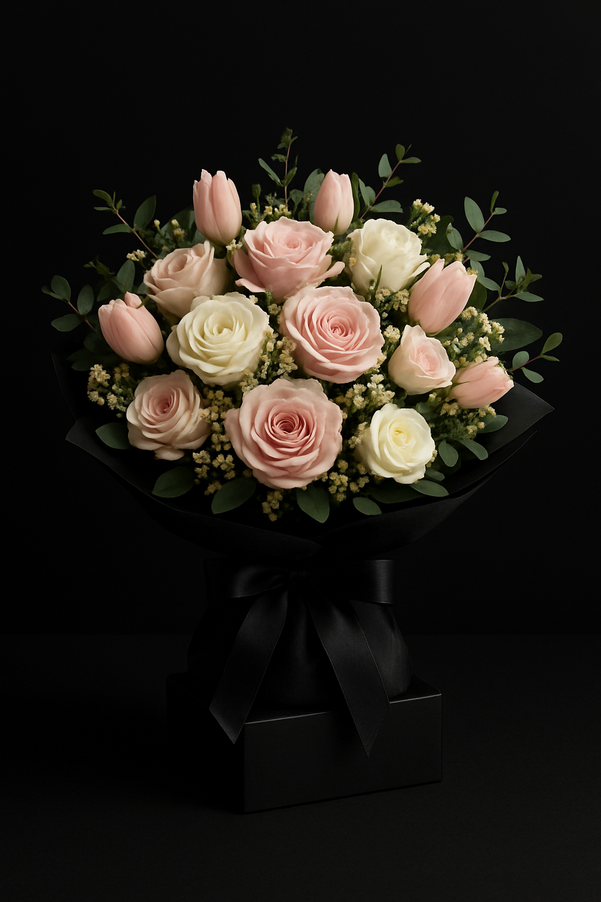

El arte de regalar flores
Regalar flores es una tradición que comunica sentimientos de una manera única. Pero, ¿cómo elegir el ramo perfecto? La clave está en el significado de cada flor, en el diseño y en la ocasión.
🌸 Según la ocasión
- Cumpleaños: ramos coloridos con girasoles, gerberas o tulipanes, que transmiten alegría y vitalidad.
- Aniversarios: rosas rojas o combinaciones elegantes como lirios con follaje verde, que simbolizan amor y compromiso.
- Agradecimientos: flores suaves como margaritas o lirios blancos, que expresan gratitud y sinceridad.
- Eventos especiales: para bodas o celebraciones, opta por diseños sofisticados como ramos en cascada o en caja.
🎨 Diseños más populares
El estilo del ramo también marca la diferencia:
- Ramo redondo: tradicional y equilibrado, ideal para ocasiones formales.
- Silvestre: mezcla de flores variadas con un aire natural y fresco.
- Minimalista: pocos elementos pero con un diseño limpio y moderno.
- En caja o hatbox: una tendencia moderna que aporta elegancia y practicidad.
🌹 El significado de las flores
- Rosas rojas: amor apasionado.
- Girasoles: energía y alegría.
- Tulipanes: elegancia y admiración.
- Lirios: respeto y pureza.
- Orquídeas: lujo y sofisticación.
✨ Consejos finales
- Asegúrate de que el ramo refleje la personalidad de la persona que lo recibe. - Combina colores cálidos y fríos para darle contraste. - Usa envoltorios sencillos (papel kraft o cajas negras) para resaltar la belleza de las flores. - Y lo más importante: elige con el corazón, porque el ramo perfecto es el que transmite tu intención.